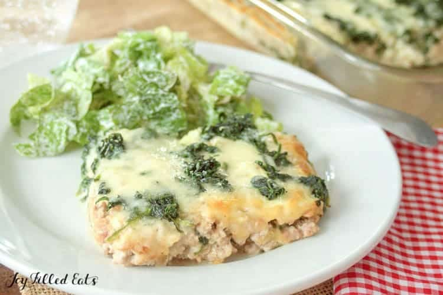

Lasagna

a delicious keto lasagna for those looking to cut carbs
This keto lasagna is made with a white sauce and plenty of meat for
protein. Skip the noodles and the sugar rush of pasta and eat some good
hearty italian-style food!
Ingredients
- ground chicken
- alfredo sauce
- ricotta cheese
- egg
- minced garlic
- minced onion
- mozzarella
- frozen spinach
Instructions
- In a large frying pan brown the meat. Crumble it into small pieces (I use a potato masher to do this) while cooking. Remove from the heat and add the alfredo sauce and 1/2 tsp salt. Set aside.
- Preheat oven to 350 if baking immediately (you can also refrigerate for a day or two before baking).
- In a separate bowl whisk together the ricotta, egg, 1/2 tsp salt, garlic, and onion.
- Spread half the meat in the bottom of a large casserole dish. Top with half the ricotta and then half the spinach. Sprinkle half the mozzarella on top. Repeat the layers: meat, ricotta, spinach, and the finish with the rest of the mozzarella on top.
- Bake for 35-40 minutes until the cheese on top is golden and bubble.